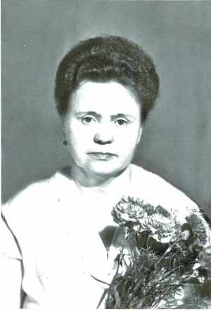
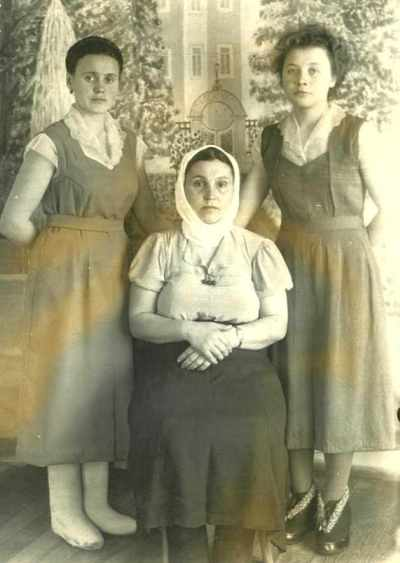
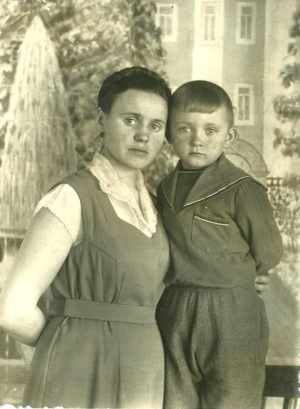
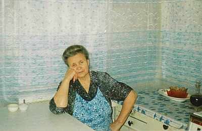

Кравчук (Лысенко) Надежда ВасильевнаРодилась 05.09.1935 в д.Алферовка, Купинский р-н, Новосибирской обл., Россия. в 1955 вышла замуж за Кравчука Владимира Павловича, в 1976 переехали в Гродно (Беларусь), работала продавцом, слесарем-сборщиком завода "Радиоволна". |

 сестры: Надежда, Евгения (сидит), Валентина, 1962г.  вместе с сыном Сергеем, 1962г. дома в Гродно, 2006г. |
|
Родители:
Братья/Сестры:
Дети:
|